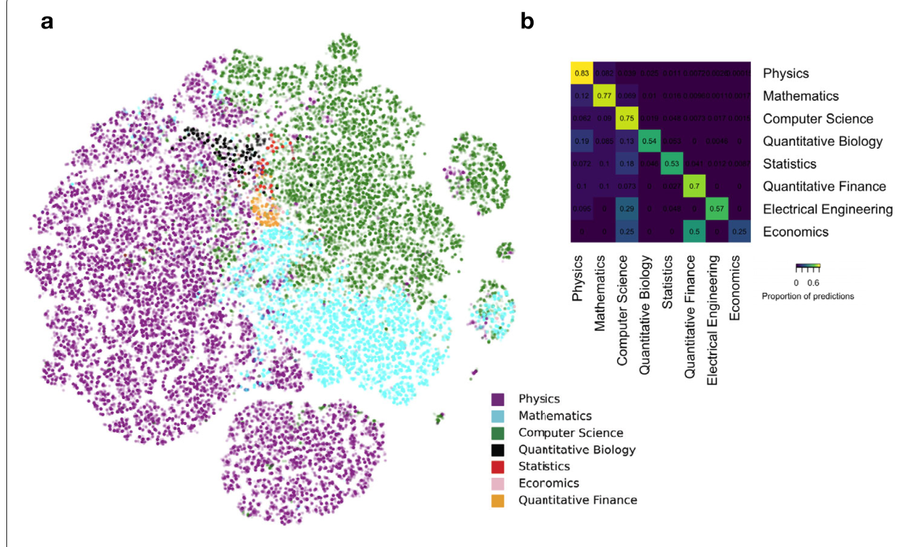
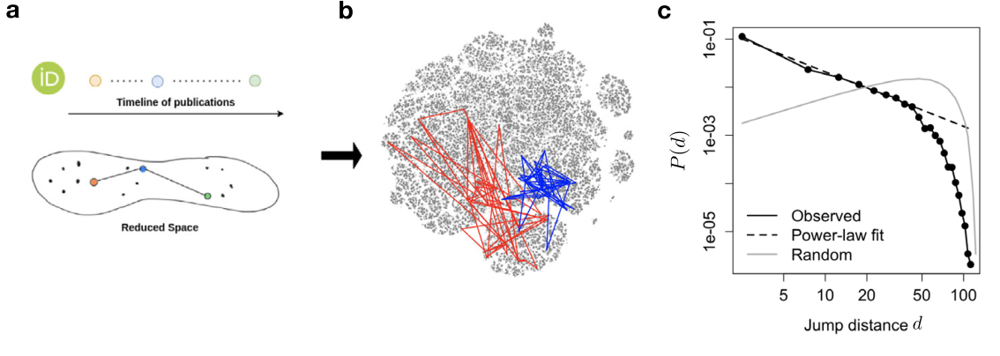
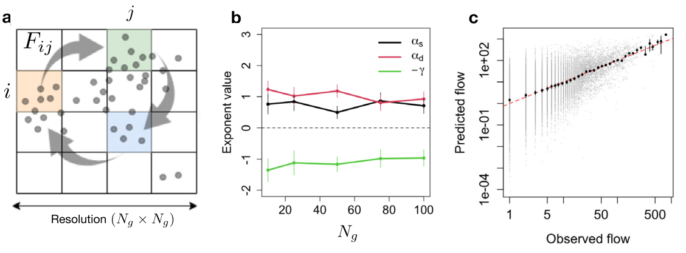
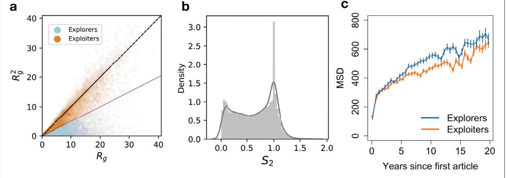
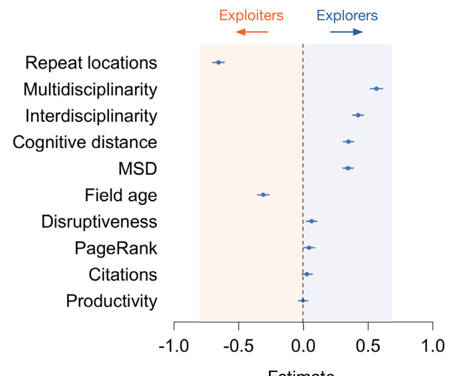
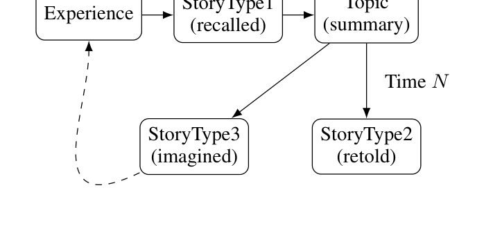
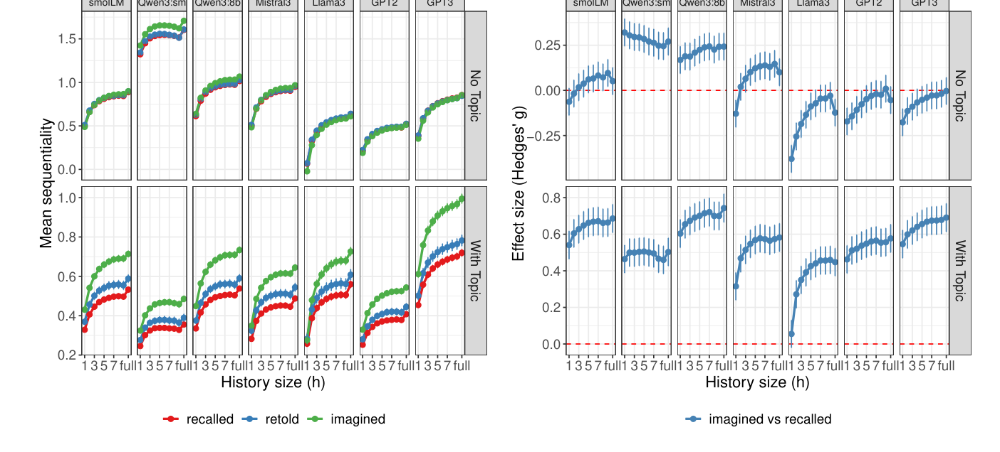
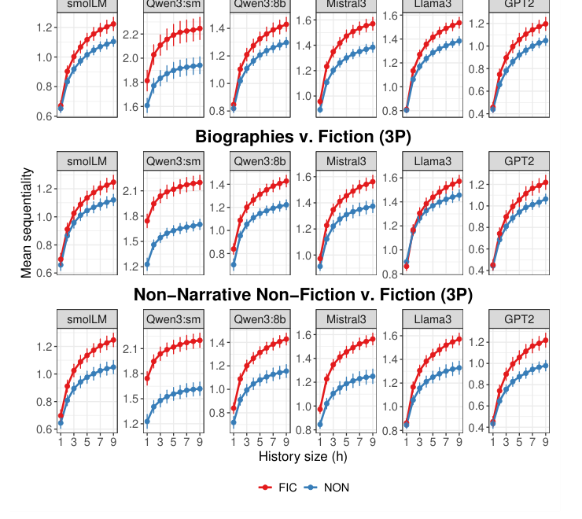
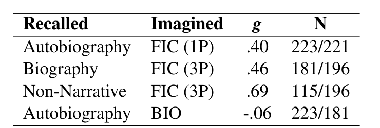

📑 논문 리뷰 (Paper Reviews)
Science of Science Human Mobility Gravity Model arXiv tSNE
Singh, C. K., Tupikina, L., Lécuyer, F., Starnini, M., & Santolini, M. (2024). Charting mobility patterns in the scientific knowledge landscape. EPJ Data Science, 13:12. https://doi.org/10.1140/epjds/s13688-024-00451-8
Abstract
본 연구에서는 과학 지식 지형(지식 공간)에서의 이동 패턴을 체계적으로 연구하여, 과학적 발견 과정을 공간 이동에 비유하는 은유적인 아이디어들을 공식적이고 과학적인 용어로 구체화했다. low-dimensional embedding techniques를 사용해 물리학·컴퓨터 과학·수학 분야의 150만 개 논문으로 구성된 knowledge space를 구축했고, 그 결과 과학적 이동 패턴이 실제 사람들의 물리적 공간 이동과 매우 유사하다는 것을 발견했다.
새로운 연구로의 도약(이동)은 논문 밀도가 높은(연구가 활발한) 영역에서 일어날 확률이 높고, 기존 연구와 거리가 먼 영역으로 이동할 확률은 낮아진다. 연구자는 두 유형으로 나뉜다.
- explorers: 학문을 넘나들며 새로운 분야를 개척하는 역할
- exploiters: 특정 전문 분야에 주로 머무르며 지식을 파고드는 역할

Introduction
연구자들의 논문 발표 궤적을 연구하는 것은 과학 발전의 근간을 이루는 복잡한 과정을 파악하는 데 도움이 된다.
📌 참고할 만한 논문: Tuninetti M, Aleta A, Paolotti D, Moreno Y, Starnini M (2021) Prediction of new scientific collaborations through multiplex networks. EPJ Data Sci 10(1):25. https://doi.org/10.1140/epjds/s13688-021-00282-x — 연구자들 간의 과학적 신뢰도와 상호 과학적 관심도(각각 논문 인용 횟수와 키워드로 정량화)를 결합하여 새로운 과학적 협력 가능성을 더 정확하게 예측.
중력 모델 (Gravity Model)
물리학에서 두 물체 사이의 중력이 질량이 클수록·거리가 가까울수록 강해지는 것과 같은 원리가 연구자들의 연구 주제(분야) 이동 패턴에서도 나타난다.
- 연구 분야의 인구수 및 밀도(질량 역할): 특정 주제·분야에 이미 많은 연구자가 방문하여 논문을 출판했을수록 그 분야는 질량이 큰 행성처럼 강한 끌어당기는 힘을 가진다. 연구자들은 이미 활발하게 연구되어 논문 밀도가 높은 영역으로 이동할 확률이 높다.
- 연구 주제 간의 인지적 거리: 거리가 멀어질수록 중력이 약해지는 것처럼, 연구자들은 자신의 기존 연구에서 너무 멀리 떨어진 생소한 분야로 한 번에 건너뛸 확률은 낮다.
연구 방법 (Method)
arXiv에 게재된 논문들의 고유한 특성을 활용했다. arXiv 프리프린트의 출판 메타데이터 (1992~2018년 사이 온라인 게재된 1,456,403개 논문)에 임베딩 기법을 적용해, 서로 다른 주제와 연구 분야 사이의 관계를 정량화하고 과학적 지형의 본질을 포착하는 저차원 지식 공간을 구축했다. 이렇게 도출된 저차원 임베딩을 바탕으로, 저자 식별(disambiguation)을 거친 연구자들의 출판 기록을 이용하여 이 공간 속에서 그들의 이동을 추적했다.
📌 참고할 만한 논문: Clement CB, Bierbaum M, O'Keeffe KP, Alemi AA (2019) On the use of arXiv as a dataset. arXiv preprint. arXiv:1905.00075
Result
tSNE 알고리즘을 통해 초기 공간을 저차원(2차원) 공간에 임베딩하여 차원을 축소했고, 관찰된 클러스터링을 정량적으로 검증(정확도 측정)하기 위해 데이터의 70%로 k-Nearest Neighbors classification을 수행했다.

연구자들의 이동 패턴은 Random이 아니다 — 거듭제곱 법칙을 따른다는 것은, 대부분의 점프(이동)는 거리가 매우 짧고(자신의 원래 관심사와 가까운 곳에서 맴돌고), 극히 일부의 점프만이 지식 공간을 가로지르는 아주 먼 거리의 이동(Long jump)을 보여준다는 의미다. 또한 더 많은 연구가 이루어진, 더 밀집된 지역들이 실제로 존재한다.

Ng는 해상도 수준을 정량화하는 매개변수이며, 인구 수는 격자 수준에서 집계된다.
- 격자 셀이 클수록 장거리 도약이나 토픽 전환과 같은 동작을 주로 포착하고, 격자 셀이 작을수록 인접한 토픽으로의 국소적인 도약을 더 많이 포착한다. (저자의 연속된 두 논문이 적어도 하나의 필드 태그를 공유하는 경우 동일한 주제에 속한다고 가정)

탐험가들은 커리어 중반(5~15년 차)에 지식 공간을 훨씬 더 넓게 개척해 나가지만, 20년 차 이상의 시니어가 되면 두 그룹 모두 기존 연구를 활용하는 방향으로 안주하는 경향을 보인다. 한편 생산성(Productivity)이나 논문의 단순 최대 인용 수(Citations)는 탐험가와 활용자 간에 큰 차이가 없었다.

Discussion
- 혁신(Innovation)과 기존의 성과를 깊이 있게 파고들려는 전통(Tradition) 사이에서 과학계가 겪는 필수적인 긴장 관계(Essential tension)를 실증적으로 보여주는 결과다.
- 여러 학문을 가로지르는 연구자들이 장기적으로는 연구 자금(Funding) 확보 등 더 큰 성공을 거두는 경향이 있다.
- 이 연구는 개별 연구자의 궤적에 초점을 맞추었지만, 현대 과학의 혁신은 대부분 '팀 단위'로 이루어진다. 따라서 개별 연구자들의 상호작용과 팀 단위의 궤적을 묶어 분석하는 후속 연구가 필요하다.
- 궁극적으로 저자들은 논문의 피인용 수, 연구 분야의 연차, 배정된 연구 자금 등의 외부 속성을 추가해 이른바 딥 중력 모델(Deep Gravity Model)을 구축한다면, 이러한 공간 이동 모델이 연구 지원 기관들이 과학적 탐구와 혁신을 장려하기 위한 정책을 세우고 연구의 질을 평가하는 데 유용한 도구로 쓰일 수 있을 것이라 제안한다.
Disruptive Index (DI): 논문의 혁신성을 수치화하기 위해, 후속 논문들이 이 논문만 인용하는지(혁신적), 아니면 이 논문이 참고한 과거의 참고문헌들까지 같이 인용하는지(기존 연구의 연장)의 비율을 공식으로 계산한다.
Narrative Flow Sequentiality LLM Replication NLP
Piper, A., Hamilton, S., Zhou, H., & Pianzola, F. (2026). Fiction Flows: A Replication and Reinterpretation of Narrative Sequentiality. Proceedings of ACL 2026 (Long Papers), 34158–34174. (원 연구: Sap et al., 2022, PNAS)
Abstract
서사적 흐름(narrative flow)은 memory와 expectation의 상호작용에서 생겨나며, 이야기가 만들어지는 방식과 이해되는 방식 양쪽을 규정한다. 즉 flow는 ① 인지적 과정에 뿌리를 두고, ② 생산자·수용자 양면에 걸쳐 있다.
이 추상적 구성 개념을 operationalize(조작화)하기 위해 Sap et al.(2022)은 sequentiality를 제안했다 — 추상적인 narrative flow를 "문장 예측 가능성 계산"이라는 측정 가능한 절차로 바꾼 것이다. 이들에게 "흐름이 좋다"는 앞 문장을 읽고 나면 다음 문장이 예측하기 쉬워진다는 뜻이고, 그래서 상상한 이야기가 회상한 이야기보다 flow가 좋다고 보고했다. (전형적인 이야기 틀·스키마는 따라갈 수 있어 예측이 쉬워지는 반면, 실제 회상은 우연적·개별적 디테일이 흐름을 끊는다.)
본 논문은 ① 여러 언어모델에 걸친 대규모 재현, ② 모델링 선택이 원 결과를 어떻게 좌우하는지 분석, ③ 출판된 픽션·서사적 논픽션 지문을 써서 일반화를 검증한다. 핵심 결론: 그 효과는 대상(narrative flow)이 아니라 측정 도구(setup)에서 나온 것이며, imagined vs recalled가 아니라 fiction vs non-fiction(허구 대 사실)에서 픽션적 서술이 sequentiality의 진짜 담지자로 드러난다.

Introduction
Sap et al.은 "narrative flow"(한 사건이 다음 사건으로 얼마나 자연스럽게 이어지는가)를 계량화하기 위해 sequentiality라는 계산적 측정치를 도입했다. GPT-3로 문장 수준 likelihood를 추정했고, 상상 이야기 > 자서전 이야기로 sequentiality가 더 높게 나왔다.
- flow: 넓고 주관적인 심리 현상(몰입·경험)
- sequentiality: 그 현상의 텍스트로 드러나는 부분만 떼어낸 것
결국 sequentiality를 쟀다고 flow를 잰 것은 아니다로 수렴한다. LLM은 이 문제에 새로운 렌즈를 제공하는데, 서사에서 무엇이 전형적으로 뒤따르는지에 대한 인간의 기대를 뒷받침하는 distributional cues를 상당 부분 내재화하기 때문이다. LLM의 역할은 ① measurement tool(LLM으로 flow를 잰다), ② computational hypothesis(LLM 자체가 저자·독자의 예측 방식에 대한 가설)로 볼 수 있다.
Sap et al.(2022)의 미해결 문제 4가지
- narrow operationalization: flow 자체를 "모델의 예측 용이성"과 동일시해 버린다. flow는 넓고 주관적인데, sequentiality는 고작 모델이 예측하기 쉬운 정도로만 잡는다.
- single proprietary model: GPT-3 하나로만 했으니, 그 발견이 모델 구조·규모·훈련 데이터에 얼마나 독립적인지 알 수 없다.
- idiosyncrasies in the formula: plot summary(topic) 포함 때문에 어느 구성 요소가 차이를 만드는지 분리하기 어렵다. 원 효과가 거의 전적으로 topic 항의 포함에 매달려 있어, 문맥 흐름이 아니라 story–summary mismatch에 대한 민감성을 가리킨다.
- 특정 데이터셋(HippoCorpus)에 국한: 크라우드워커의 일기형 서사·요약 프롬프트라는 특수한 조건에 묶여 있다.
⇒ sequentiality는 상상 그 자체(imagination per se)의 속성이라기보다 픽션적 서술(fictional narration)의 속성으로 이해하는 게 낫다. 즉 sequentiality = flow가 아니라, 조건(모델·데이터)에 따라 흔들리는 부분적 지표다.
Method
공식은 SEQ = NLL(topic-only) − NLL(topic+context) — 문맥이 진짜 도움이 됐거나(진짜 flow),
아니면 문장이 요약과 안 맞아 topic-only NLL이 애초에 컸거나, 둘을 구분하지 못한다.
- Model effects: 7개 모델(GPT-2/3, LLaMA 3.1, Qwen 3 8B·0.6B, SmolLM 3, Mistral 3)을 세대·크기·구조를 넓게 흩뜨려 사용. base 모델 위주로 간다.
- Formula effects: (A) Exact replication("With Topic") 원 공식 최대한 그대로 재현, (B) Context-only("No Topic") topic을 빈 문자열로 대체해 국소 문맥의 기여만 분리.
- Data effects: HippoCorpus를 넘어 CONLIT 데이터셋의 출판 픽션 vs 매칭된 논픽션 (자서전·전기·비서사)을 시점(POV) 통제하며 비교.
- 타당성 검증: 표준 담화 응집성 지표(어휘·의미 중첩, 담화 연결어·RST·시제·행위자 연속성, 문장 난이도)와 직접 대조. context-only sequentiality를 H1·H3 창에서 계산해 위계적 회귀(mixed-effects)로 예측.

Results
- 직접 재현은 성공: 원 공식(With Topic)에서 imagined > recalled가 모든 모델에서 중~대 효과크기로 재현됨(평균 g ≈ 0.58).
- 그런데 전부 topic 항에 달려 있다: topic을 빼고 문맥만 조건으로 주면(No Topic) 효과크기가 사실상 0으로 붕괴(imagined–recalled 평균 g ≈ 0.07). 즉 원 측정은 문맥적 flow가 아니라 "요약과의 불일치"를 보상하고 있었다. 상상 이야기가 높게 나온 건 더 sequential해서가 아니라, (남이 쓴) 요약과 덜 비슷했기 때문이다.
- 픽션은 실제로 더 흐른다: 장르 기반 조작화(CONLIT)에서는 context-only 공식으로도 픽션이 논픽션 장르보다 일관되게 높은 sequentiality를 보였다(중~대 효과). 반면 자서전 vs 전기 사이엔 의미 있는 차이가 없어, 효과가 "실재 사건"이 아니라 "비실재 사건의 구성(=상상)"을 모델링하는 데서 옴을 시사.
- 표준 응집성 지표는 sequentiality를 예측하지 못한다: 문장 난이도를 통제하면 어휘 중첩, 의미 유사도, 개체·시제 연속성, 담화 관계 어느 것도 문맥적 예측 이득과 신뢰할 만하게 연관되지 않음(모두 p > .20).
- Instruction-tuned 모델은 불안정: 분해하면 baseline·contextual 성분이 각각 recalled를 선호하는데도 그 차이가 imagined 쪽 양수로 나타나, 지시 튜닝이 유발한 왜곡의 상호작용임을 드러낸다.


Conclusion
- imagined > recalled 효과는 오직 원 With-Topic 공식에서만 재현되며, topic을 빼면 붕괴·불안정해진다. Topic 공식은 참가자가 쓴 요약으로부터의 이탈을 보상하므로, narrative sequentiality가 아니라 story–summary mismatch를 잡는다.
- 이 실패는 HippoCorpus의 특수한 데이터 생성 방식에 국한된다. 출판 장르로 넘어가면 (픽션 vs 매칭 논픽션) 픽션이 일관되게 높아, sequentiality는 "실재 기반 상상(전기)"이나 "기억 기반 인지"보다 픽션적 서술의 속성으로 보는 게 타당하다.
- NLL 기반 문맥 이득은 전통적 담화 응집성 지표와 정합하지 않는다 ⇒ sequentiality는 flow의 직접 측정이 아니라, 서사적 기대의 구별되는 한 차원을 포착하는 것으로 재해석해야 한다.
📚 읽은 책 (Book Notes)
분류
독서 메모 예시: 이 책에서 인상 깊었던 부분은 ~이다.
💡 배운 것들 (TIL / Memo)
TIL
오늘 배운 것 예시: TEI/XML에서 <persName> 태그는 인물 이름을 마크업할 때 사용한다.